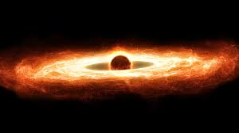
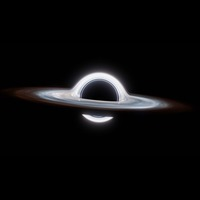
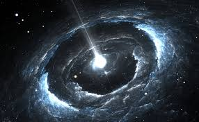
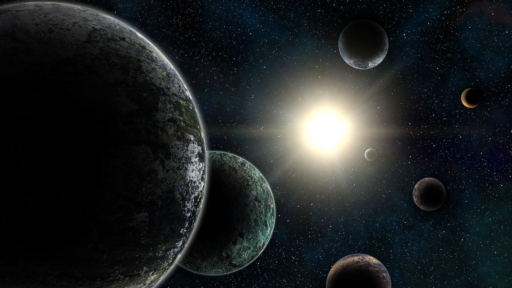

Overview
The cosmos is filled with incredible events that shape its evolution. From the birth and death of stars to the collisions of galaxies and the mysterious forces driving cosmic expansion, every phenomenon plays a role in shaping the vast, ever-changing universe. With future advancements in space telescopes and observatories, humanity will continue to uncover more about these cosmic wonders, deepening our understanding of the universe and our place within it.
Supernovae: The Death of a Star in a Cosmic Explosion

A supernova is the spectacular explosion of a star, marking either its violent end or the beginning of something new. These stellar detonations occur when a massive star runs out of nuclear fuel, causing its core to collapse under gravity. This triggers a massive explosion that outshines entire galaxies for a short period. Supernovae play a critical role in spreading heavy elements like carbon, oxygen, and iron across space, seeding future stars and planets. Some of the most famous supernovae in history have been visible from Earth, such as the one observed in 1054 AD, which led to the formation of the Crab Nebula.
Another type of supernova, known as a Type Ia supernova, occurs in binary star systems when a white dwarf star siphons too much material from its companion, leading to an uncontrolled nuclear reaction. These explosions are used as cosmic measuring tools because they always explode with the same brightness, helping astronomers determine the distances to faraway galaxies.
Black Holes: The Bottomless Pits of Space

Black holes are regions of space where gravity is so intense that nothing, not even light, can escape. They form when the core of a massive star collapses after a supernova explosion. The boundary surrounding a black hole, known as the event horizon, is the point of no return—once something crosses it, it is lost forever to the singularity at the center.
Supermassive black holes, found at the centers of most galaxies, can have masses equivalent to billions of Suns. The one at the center of the Milky Way, known as Sagittarius A*, has a mass of about four million Suns. Black holes can also merge, producing gravitational waves—ripples in space-time first detected by the LIGO observatory in 2015. These waves travel across the universe, carrying information about some of the most violent events in existence.
Neutron Stars and Pulsars: The Ultra-Dense Relics of Dead Stars

When a massive star explodes in a supernova, it sometimes leaves behind an incredibly dense core called a neutron star. These stars are only about 20 kilometers in diameter but pack more mass than the Sun, making them among the densest objects in the universe. A single teaspoon of neutron star material would weigh as much as a mountain.
Some neutron stars spin rapidly, emitting powerful beams of electromagnetic radiation. These are known as pulsars, and they act like cosmic lighthouses, flashing beams of light as they rotate. The first pulsar was discovered in 1967 by astronomer Jocelyn Bell Burnell, and their precise, rhythmic pulses have been used to test Einstein’s theory of relativity and even search for gravitational waves.
Dark Matter and Dark Energy: The Hidden Forces of the Universe

Dark matter is an invisible substance that does not emit or interact with light, yet it exerts a strong gravitational pull on galaxies and cosmic structures. Scientists believe it makes up about 27% of the universe’s mass, yet its exact nature remains unknown.
Dark energy, even more mysterious, is thought to be responsible for the accelerated expansion of the universe. Unlike gravity, which pulls objects together, dark energy acts as a repulsive force, stretching space itself. Together, dark matter and dark energy make up about 95% of the universe, meaning that most of the cosmos is still an enigma to scientists.
Exoplanets and Rogue Planets: Worlds Beyond Our Solar System
